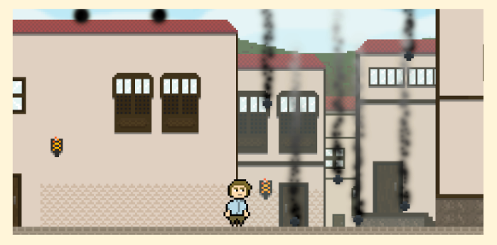
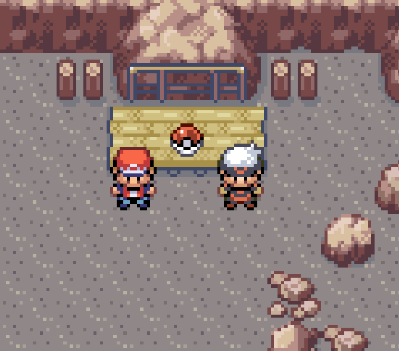

> Luis Javier Salgado Díaz
Con formación práctica en desarrollo de software, bases de datos y aplicaciones multiplataforma.
proyectos/


Desarrollo en solitario desde hace más de 6 meses de un juego de terror pensado para jugarse online con amigos. Me encargo de todo el ciclo: diseño, programación, modelado 3D y ambientación sonora, con el objetivo de sacar una primera demo jugable en itch.io.
Cada día en mi tiempo libre sigo una lista ordenada de tareas que pensado previamente para añadir al juego. Cada incorporación por ejemplo de una mecánica me suele llevar una semana o dos.
Realmente cada simple detalle ha sido un reto técnico Quizás la programación se me hace más fácil que el arte, pero sigue siendo complicado el trabajo con Netcode para sincronizar el multijugador.


Desarrollado en solitario para una GameJam, con plazo ajustado de entrega. Inspirado visualmente en la Isla de La Palma. Fue mi primer proyecto serio en Unity, tras el cual decidí seguir profundizando en desarrollo de videojuegos.
Lo novedoso para mí fue el desarrollo del pixel art. Hice un atlas 2D de sprites con una resolución de 16x16 pixeles con un resultado bastante satisfactorio.


Proyecto propio inspirado en fangames de Pokémon orientados a una experiencia cooperativa entre jugadores.
Le dediqué un montón de horas y fue divertido, pero a la larga sentí que me iba a llevar mucho tiempo para un resultado decente y realmente el público objetivo solo éramos mi hermano y yo. Lo continuaría si mi economía me permitiera desarrollar sin preocuparme por el dinero.